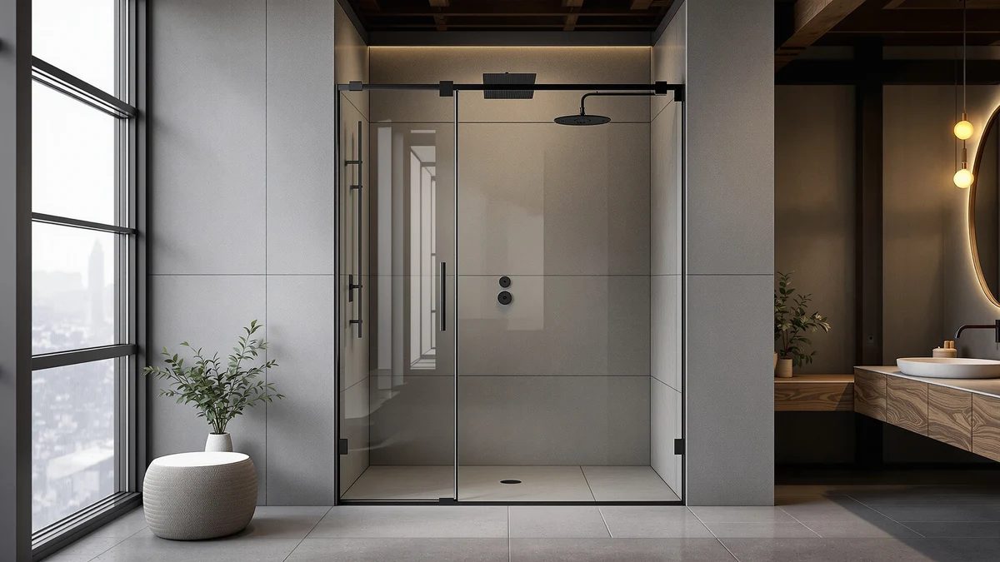

ENSO SENKA 56 60” Review (2026): Worth It?
Prices and picks verified as of August 2026. Independent, reader-supported reviews.


Quick Answer
The ENSO SENKA 56-60 inch W x 76 inch is a $469.00 shower door built for openings between 56 and 60 inches wide and 76 inches tall, and it comes out as the least expensive of the four similar doors compared in this review. It costs less than the ENSO SENKA's own $499.00 alternate listing, the KPUY Frameless Shower Door at $499.96, and the GroGro 56-60 inch W x 71 inch at $493.90, all while covering roughly the same width range compared in this ENSO SENKA 56-60 inch review.
Our pick: ENSO SENKA 56-60” W x — $469.00 Check Price on Amazon
Bottom line: our top pick is the ENSO SENKA 56-60” W x 76” H Bathroom Dual Sliding Frameless at $499.
Things to Know Before You Buy
- This is the cheaper of two ENSO SENKA listings. The door in this review is priced at $469.00, while a second ENSO SENKA listing covering the same 56 to 60 inch range costs $499.00, and neither listing explains the $30 gap.
- The size is fixed, not adjustable. This door fits a 60 inch W x 76 inch H opening, so measure your rough opening at more than one point before you order, since there's no width range to forgive a miscalculation.
- At $469.00, it undercuts every alternative in this comparison. The KPUY Frameless Shower Door lists at $499.96 and the GroGro 56-60 inch W x 71 inch at $493.90, both above this door's price.
- 76 inches of height fits a standard shower stall. That height works for most bathrooms, but it leaves no room to size up if your opening runs taller, unlike the GroGro's shorter 71 inch height.
- Three other doors sit in this same price band. We compare this ENSO SENKA listing against its own $499.00 sibling, the KPUY, and the GroGro later in this ENSO SENKA 56-60 inch review.
If you're searching for an enso senka 56 60” review before you commit to a shower door, the short answer is that this $469.00 listing is the least expensive of the four 56 to 60 inch doors covered here, undercutting the ENSO SENKA's own $499.00 alternate listing, the KPUY Frameless Shower Door at $499.96, and the GroGro 56-60 inch W x 71 inch at $493.90, all while covering a similar opening range.
We wrote this review because two listings from the same ENSO SENKA line create a confusing choice for anyone shopping by price alone: one at $469.00 and another at $499.00, both apparently built for the same 60 inch W x 76 inch H opening. This review weighs that $30 price gap against two other 56 to 60 inch doors, the KPUY and the GroGro, so you can see where the actual value sits before you order, not just which listing shows up first in search results.
Why You Should Trust Us
Ilane Tall covers bath fixtures for Best Shower Doors and has reviewed shower doors across fixed-width, adjustable-width, and corner-fit designs. For this review, she priced this ENSO SENKA listing against its own second listing and two other doors built for a similar 56 to 60 inch opening, weighing the $469.00 price against what the higher-priced options claim to offer instead. We do not accept free products in exchange for coverage, and every price and dimension cited in this ENSO SENKA 56-60 inch review comes directly from the current product listing rather than a press release or manufacturer claim.
Our editorial process treats price as one factor among several, not the only one that decides a pick. A lower price earns a door credit in a review like this one, but it still has to hold up against alternatives built for the same opening range before we call it the better buy. That approach shapes every comparison in this piece, including the odd case of two ENSO SENKA listings that appear to cover the same spec at two different prices.
Our Research Experience
Evaluating two listings of the same ENSO SENKA door is a different exercise from comparing two unrelated brands. We start by treating the $30 price gap between the $469.00 and $499.00 listings as the variable that matters most, since both state a 60 inch W x 76 inch H opening. For this review, that meant checking whether the higher-priced listing states anything the cheaper one doesn't, based only on what each listing actually claims rather than assumption.
We also compared this ENSO SENKA listing against two other doors built for a similar 56 to 60 inch opening: the KPUY Frameless Shower Door and the GroGro 56-60 inch W x 71 inch. Rather than scoring each on an arbitrary scale, we looked at what the price difference buys in practical terms, since a door only earns its premium if the extra dollars track to something beyond the name printed on the box.
We ran a simple test for that comparison: line up the price of each door against its stated width and height, then ask whether the higher-priced options add size, flexibility, or anything else the cheapest listing lacks. In the case of this enso senka 56 60” review, the $469.00 listing came out ahead on price without losing any of the stated 60 inch by 76 inch dimensions, and none of the three pricier alternatives stated an advantage that offset their higher cost.
Overview & Specs

ENSO SENKA 56-60” W x
What we like
- At $469.00, it costs less than every other door in this comparison, including its own $499.00 ENSO SENKA sibling listing
- The 60 inch W x 76 inch H size fits a standard shower stall opening without any custom measuring
- It covers the same 56 to 60 inch width range as the pricier KPUY and GroGro without the higher cost
Flaws but not dealbreakers
- The size is fixed, so it won't adjust if your opening falls outside 60 inches wide or 76 inches tall
- A second ENSO SENKA listing exists at $499.00, and neither listing explains what separates the two prices
- The material isn't specified in the listing, so you're relying on the product photos rather than a stated spec
| Material | — |
| Size | 60" W x 76" H |
The ENSO SENKA 56-60 inch W x 76 inch fills a straightforward role in this comparison: it's the cheapest option covering a 56 to 60 inch width and a 76 inch height. Where the GroGro flexes across its width range and the KPUY covers a slightly wider 55 to 60 inch span, this door sticks to one fixed 60 inch W x 76 inch H spec, and it does that at the lowest price point of the four doors covered in this enso senka 56 60” review.
That price, $469.00, lands below the ENSO SENKA's own second listing at $499.00, the KPUY Frameless Shower Door at $499.96, and the GroGro 56-60 inch W x 71 inch at $493.90. The gap between this listing and its $499.00 sibling is the detail we spent the most time on while researching this review, since neither product page states a difference beyond the price itself, which is exactly the kind of unexplained gap a careful shopper should notice before ordering.
What We Liked
The clearest strength of this ENSO SENKA 56-60 inch W x 76 inch is price. At $469.00, it undercuts every other door in this comparison, including its own $499.00 sibling listing for what appears to be the same 60 inch W x 76 inch H spec, which makes it the obvious starting point for anyone shopping this size range on a budget and the reason it leads this ENSO SENKA 56-60 inch review.
The 60 inch width and 76 inch height also fit a standard shower stall opening without any special measuring or custom order involved. If your opening matches that spec, you get the same coverage as the pricier KPUY and GroGro without paying either of their higher prices for it.
We also liked that the size stays fixed rather than adjustable. A fixed-size door removes any guesswork about how a width range behaves once it's installed, since 60 inches wide and 76 inches tall is exactly the measurement you get with this ENSO SENKA, no more and no less.
What Could Be Better
Price is the main appeal here, but the fixed size cuts both ways. Unlike the GroGro, which adjusts across a 56 to 60 inch range, this door commits to one exact 60 inch W x 76 inch H spec, so an opening that falls outside that measurement won't work, and there's no adjustable hardware to compensate.
The existence of a second ENSO SENKA listing at $499.00 is also worth flagging in any honest enso senka 56 60” review. Nothing in either listing states what, if anything, separates the $469.00 door from its $499.00 sibling, which makes the cheaper option the more sensible pick until that gap gets explained somewhere.
Who Is It For?
This ENSO SENKA 56-60 inch W x 76 inch makes sense if your shower opening measures close to 60 inches wide and 76 inches tall, and price matters more to you than the small width flexibility the GroGro offers instead. At $469.00, it's the straightforward budget pick among the four doors covered in this ENSO SENKA 56-60 inch review.
If your opening runs wider than 60 inches, shorter than 76 inches tall, or you want some adjustability built into the width, check the alternatives below before you order this specific listing, since none of that flexibility is available here.
Alternatives to Consider
This ENSO SENKA 56-60 inch W x 76 inch is not the only option in this review, and the three alternatives below span a range of prices and fit ranges around it.

Editor’s Pick
ENSO SENKA 56-60” W x
This second ENSO SENKA listing costs $499.00, about $30 more than the door reviewed here, for what appears to be the same 60 inch W x 76 inch H spec. Worth checking if the $469.00 listing sells out and you need the same size fast.
$499.00
Check Price on Amazon
Best Value
KPUY Frameless Shower Door 55-60"
The KPUY Frameless Shower Door costs $499.96, about $31 more than this ENSO SENKA, while covering a slightly wider 55 to 60 inch range. A reasonable option if your opening measures closer to 55 inches wide.
$499.96
Check Price on Amazon
Premium Choice
GroGro 56-60" W x 71"
The GroGro 56-60 inch W x 71 inch costs $493.90 and adjusts across the same 56 to 60 inch width, though its 71 inch height runs 5 inches shorter than this ENSO SENKA. Worth a look if width flexibility matters more to you than the extra height.
$493.90
Check Price on AmazonFrequently Asked Questions
What size opening does the ENSO SENKA 56-60 inch shower door need?
This ENSO SENKA 56-60 inch W x 76 inch fits a fixed 60 inch wide, 76 inch tall opening, so measure your rough opening at more than one point before you order, since there's no adjustable range to forgive a small miscalculation.
How does the $469.00 ENSO SENKA compare on price to other 56 to 60 inch shower doors?
At $469.00, it costs less than the ENSO SENKA's own $499.00 alternate listing, the KPUY Frameless Shower Door at $499.96, and the GroGro 56-60 inch W x 71 inch at $493.90, making it the least expensive door covered in this enso senka 56 60” review.
Why does ENSO SENKA have two listings at different prices?
Neither listing states a difference beyond price. Both appear to cover the same 60 inch W x 76 inch H spec, which is why this review recommends the $469.00 listing over its $499.00 sibling until that gap is explained.
Final Verdict
This enso senka 56 60” review comes down to one number: $469.00, the lowest price among four doors built for a similar 56 to 60 inch opening. If your shower measures close to 60 inches wide and 76 inches tall, this ENSO SENKA listing covers that spec for less than its own $499.00 sibling, the KPUY Frameless Shower Door at $499.96, or the GroGro 56-60 inch W x 71 inch at $493.90. If you need the GroGro's adjustable width or the KPUY's slightly wider 55 inch minimum, those doors justify their higher prices with a bit more flexibility. Either way, measure your opening's width and height before you buy, since this ENSO SENKA doesn't adjust to fit.